콘텐츠, 무료 상품, 유료 상품 — 세 단계
영상은 결과부터 보여 줘요. 화자가 들어 보인 휴대폰에는 입금 알림 16,326,924원이 떠 있어요. 화자는 이걸 지난달 파이프라인 하나에서 나온 수익이라고 소개하고, 자기는 경험을 상품과 서비스로 팔았을 뿐이라고 말해요.
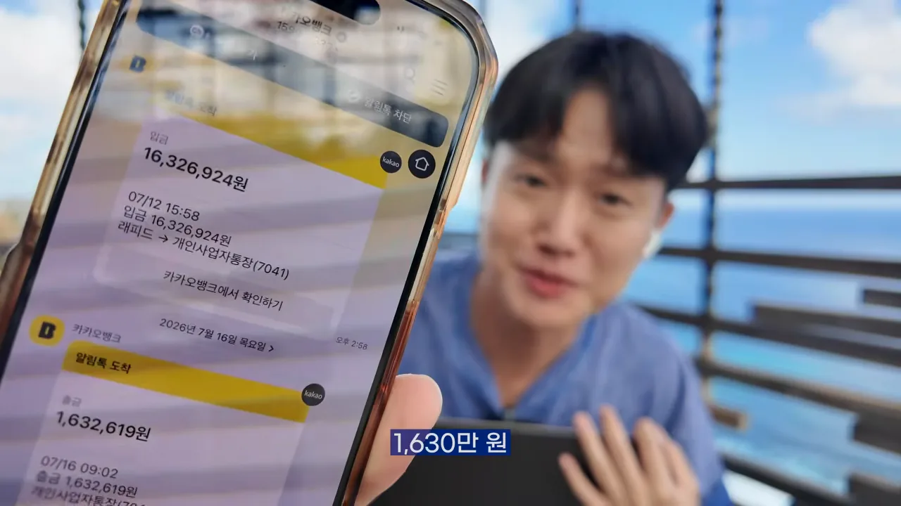
그다음 해외 사업가 알렉스 호르모지(Alex Hormozi)가 화면에 나와요. 화자는 그를 '해외 1천억 자산가'로 소개하고, 평범한 사람일수록 세 단계를 따라야 한다는 그의 주장을 전해요.
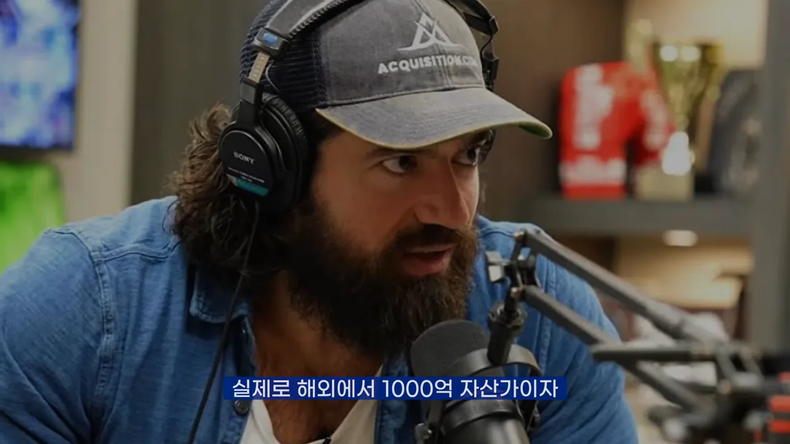
세 단계는 콘텐츠, 무료 상품, 유료 상품이에요. 단계마다 하는 일이 달라요. 콘텐츠로 경험과 노하우를 아낌없이 나눠 사람을 모으고, '이걸 왜 공짜로 풀지?' 싶을 만큼 가치 있는 무료 상품으로 신뢰를 쌓아요. 마지막으로 무료에서 가치를 이미 확인한 사람에게 유료 상품을 제안해 전환해요. 아래 그림의 맨 아래 줄은 화자가 이번에 각 단계를 무엇으로 채웠는지예요.
무엇을 팔지 정하고, 수요부터 확인해요
콘텐츠를 만들고 있든 아니든, 먼저 정할 건 '어떤 상품과 서비스를 만들고 싶은가'예요. 뭘 팔지 모르겠다면 '나는 과거에 이 주제에서 어떤 도움이 필요했지?'라고 물어보라고 해요.
화자에게 그 답은 책이었어요. 학교나 회사에는 실수했을 때 물어볼 선배와 상사가 있지만, 크리에이터나 1인 기업에는 아무도 없어요. 화자는 책에서 읽은 걸 적용하고, 실패를 데이터로 쌓으며 노하우를 만들었어요. 마침 뉴스레터와 유튜브 댓글에 '브랜딩이 어렵다', '수익화는 어떻게 하냐'는 말이 계속 올라와서, 같은 고민을 하는 사람을 위한 독서 챌린지를 떠올렸어요.
만들기 전에 수요부터 봐요
그래도 바로 만들지 않았어요. 아무도 원하지 않는 걸 일주일, 한 달 걸려 만들면 그 시간과 에너지는 버린 셈이니까요. 화자는 내가 만들고 싶은 것보다 사람들이 원하는 걸 상품으로 내는 게 가장 효율적이라고 말해요. 그래서 자기 SNS에 수요조사 글을 올렸어요.
아래가 그 스레드 글이에요. 첫 줄이 '혹시 독서챌린지 참여하실 분있나요?'이고, 함께 읽을 책이 화자가 직접 쓴 "퇴사 후 나를 브랜딩합니다"라고 밝혀요. 마지막 줄에 '간단한 수요조사니 관심있는 분은 댓글 남겨주세요'라고 적었어요.
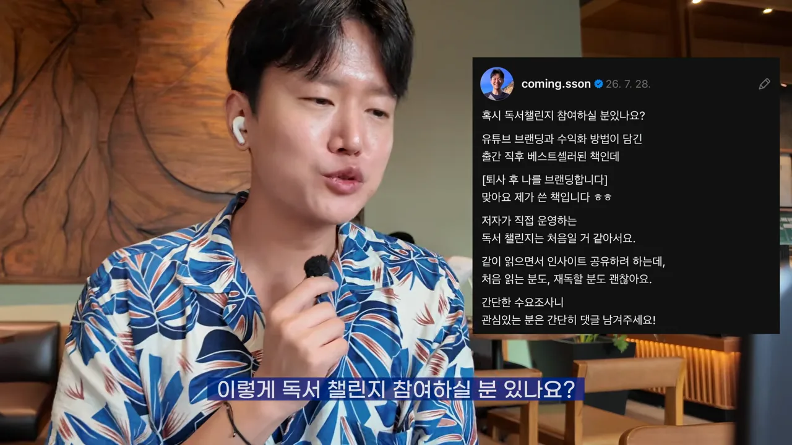
같은 내용을 뉴스레터로도 보냈어요. 화면에는 구독자들의 답장이 날짜별로 줄줄이 쌓여 있어요. 스레드 댓글도 화자 본인 것을 빼고 70개가 넘었고, 인스타그램 글은 1,600명이 읽었어요.
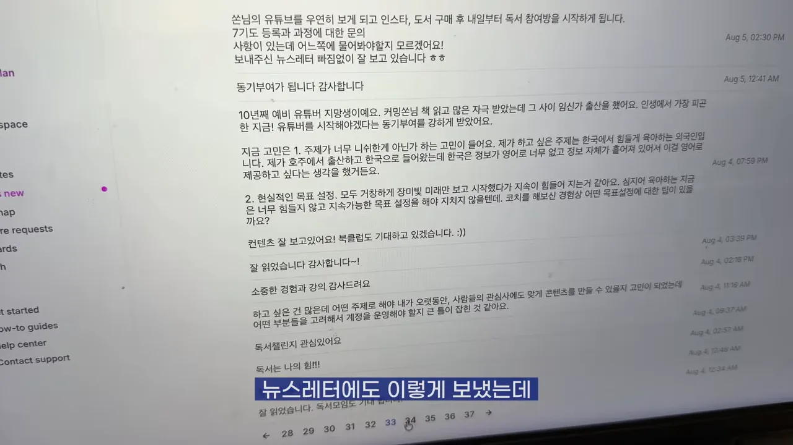
여기서 '구독자가 많으니까 되는 거 아니냐'는 반론이 나올 수 있어요. 화자는 구독자와 팔로워 규모와 상관없는 방법이라고 말해요. 자기가 운영하는 커뮤니티 '팀 퍼스널메이커스'에 구독자 1천 명이 안 되는데도 몇십만~몇백만 원을 버는 멤버가 있다는 거예요. 그러니 '나는 못 해'가 아니라 '나라면 어떻게 적용할까'로 보라고 해요.
무료 챌린지를 기획하고 운영하기
화자는 기획을 이렇게 정의해요. 누군가의 문제를 풀려고 무엇을 할지 정하고, 그걸 했을 때 기대한 대로 문제가 풀리는지 맞춰 보는 일이에요. 그래서 기획서에는 '참여자가 얻을 성과'부터 적었어요.
화면 속 노션 문서 제목은 '무료 독서 챌린지 일정'이에요. 위쪽에 컨셉(작심삼일 세 번으로 습관화), 모집 8/3~8/5, 진행 8/6~8/14, 마지막 날 독서 라이브가 있고, 아래쪽에 참여자의 성과 세 줄이 있어요.
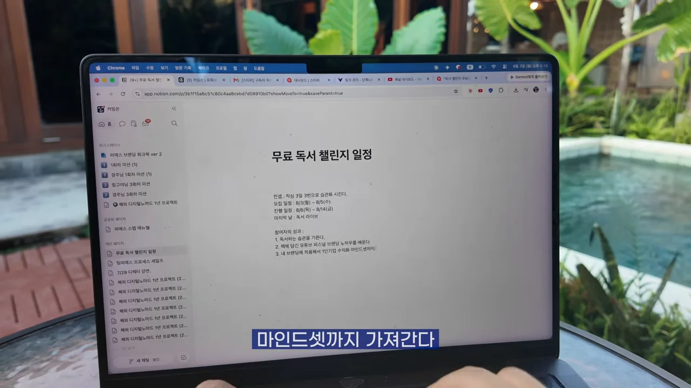
성과를 정하고 나니 할 일은 단순했어요. 매일 책을 읽고, 느낀 점과 사진으로 인증하는 인증 챌린지예요. 기획이 끝났으니 바로 모집을 열었어요.
아무도 신청하지 않으면 어쩌죠?
화자도 처음에는 창피할까 봐 걱정했어요. 그 걱정을 넘긴 생각은 이랬어요. 구독자 100명일 때 망설이다가 천 명, 만 명이 되어서 해 봤는데 아무도 안 모이면 그때가 더 창피하다는 거예요. 아무도 안 모이면 콘텐츠를 더 만들고, 실력을 쌓아 사람들의 문제를 풀어 주면 된다고 해요. 손해 볼 건 없다는 거죠.
3일 모집 결과는 617명이었어요. 화자가 들어 보인 휴대폰에는 책 표지가 걸린 단톡방이 보이고, 방 이름 옆 인원수가 617이에요.
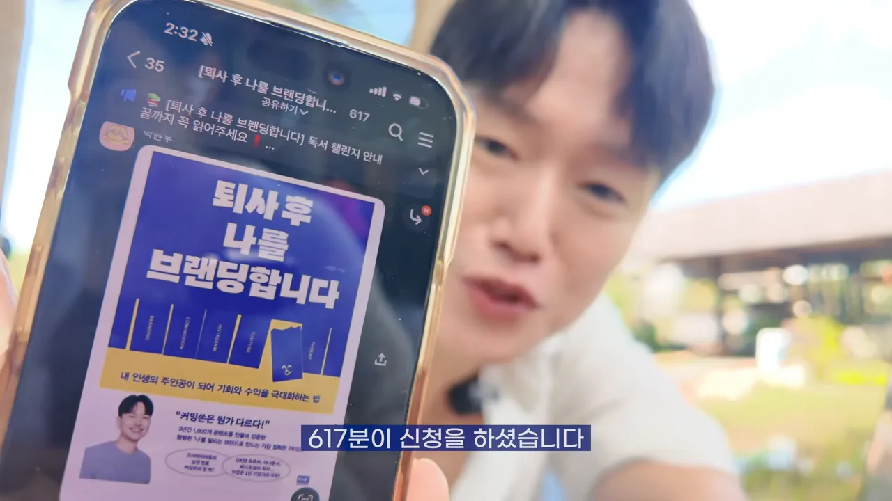
무료 상품도 상품이에요
이제 할 일은 참여자가 '이게 무료라고?' 싶을 만큼 가치를 느끼게 하는 거예요. 무료인데 그렇게까지 해야 하나 싶을 수 있어요. 화자도 처음엔 그랬지만, 1인 기업 4년 차에 배운 건 무료 상품도 상품이라는 점이에요. 참여자는 돈을 안 냈을 뿐, 시간과 에너지를 냈어요.
무료의 질이 낮으면 유료를 기대하는 사람도 없어요. 무료에서 실망한 사람이 유료를 살 리 없으니까요. 그래서 신청자가 기대보다 적어도, 한 명뿐이어도 숫자의 크기보다 숫자의 의미에 집중하라고 해요.
숫자의 크기에 집착하지 마시고 숫자의 의미에 집중을 하세요.
— 영상 06:01
유료 상품의 신호를 읽어요
챌린지 6일째, 화자는 우붓의 한 카페에서 갑자기 카메라를 켜요. 참여자에게서 '이 챌린지에서 큰 도움을 받고 있는데, 나중에 또 열 생각이 있냐'는 질문을 받았기 때문이에요.
화자는 이 질문을 두 가지 신호로 읽어요.
- 지금 충분한 가치를 주고 있어요 — 도움이 된다는 말이 먼저 나왔어요.
- 유료 상품에 대한 수요가 있어요 — 다음에도 하고 싶다는 건 돈을 내고라도 하고 싶다는 뜻일 수 있어요.
많은 크리에이터와 1인 기업가가 '막상 만들었는데 안 팔린다'에서 막혀요. 이 순서로 하면 유료를 만들기 전에 수요를 확인하니 위험이 거의 없어요. 무료 참여자도 충분한 가치를 받으니 서로에게 이득이에요.
구독자가 적어도 같은 신호가 와요
화자는 이번에도 '구독자가 많아서'라는 반론에 답하려고 커뮤니티 화면을 보여 줘요. 슬랙의 '#1-스몰윈' 채널이고, 가운데 글은 구독자 1천 명이 안 되는 멤버 백이진 님이 올린 거예요. 그 아래 달린 댓글에 "혹시 ... 과정을 코칭받을 수 있을까요? 강의가 있다면 수강생이라도 되고 싶습니다"라고 적혀 있어요.
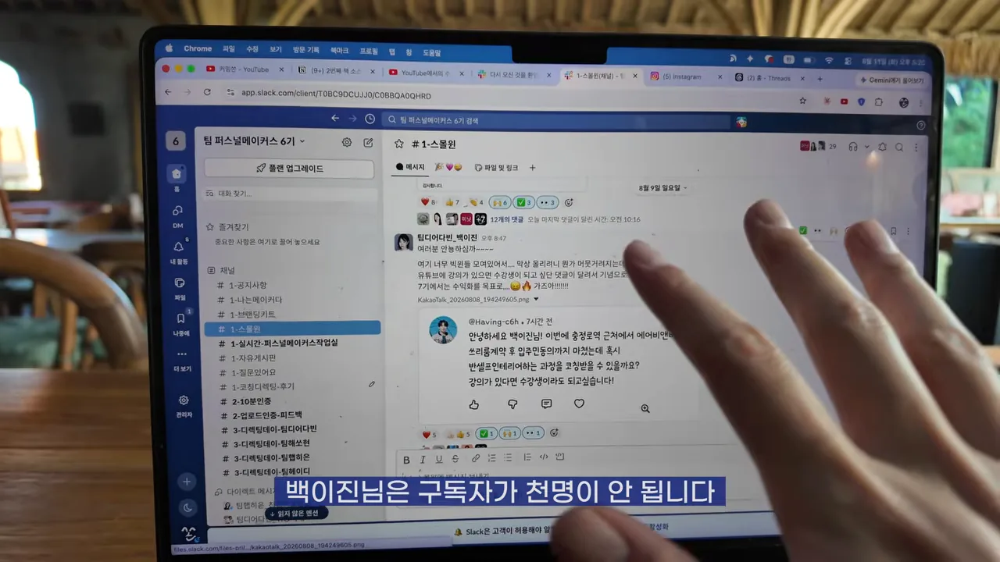
남은 3일 동안 화자는 유료 챌린지를 구체적으로 스케치해요. 챌린지를 운영하면서 참여자가 어디서 수요가 있고, 어디서 불편해하고, 무엇을 더 얻고 싶어 하는지 데이터가 쌓이고 있었거든요. 유료 상품은 그 데이터를 바탕으로 짜요.
마지막 날 라이브
약속대로 마지막 날 참여자와 줌 라이브를 열었어요. 화자가 '계속 같이 읽으며 내 콘텐츠, 브랜딩, 비즈니스에 적용하고 싶은 분은 내일 공지를 보고 신청하라'고 하자 채팅창에 반응이 쏟아졌어요. 아래는 라이브 끝에 참여자들이 책을 들어 보이는 장면이에요.
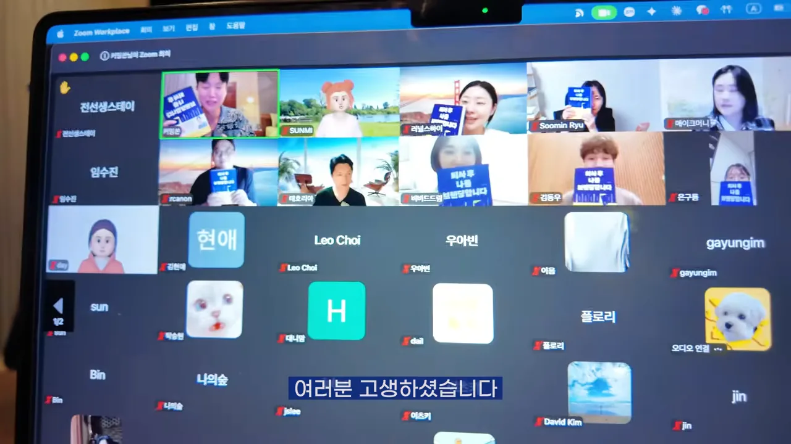
유료 챌린지를 열고 얻은 결과
라이브가 끝난 날 밤, 화자는 유료 챌린지를 밤새 기획했어요. 수요가 확인된 서비스니 이제는 에너지를 쏟을 때라는 거예요. 무료 챌린지에서 가장 반응이 좋았던 라이브를 중심에 두고, 4주 동안 매주 라이브를 여는 프로그램으로 짰어요.
공지는 무료 챌린지 단톡방에 먼저 올렸어요. 노란 말풍선에 "첫번째 퍼스널메이커스 4주 독서챌린지를 오픈합니다"와 "다른 곳에 공개하기 전에 여러분께 가장 먼저 참여 기회를 드린다"는 문장이 보여요.
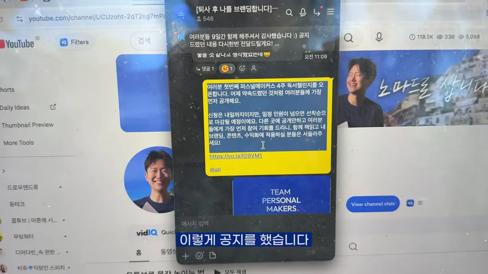
곧 첫 결제 알림이 왔어요. 화면 속 알림에는 "상품이 판매되었습니다"와 함께 상품명 팀 퍼스널메이커스 독서 챌린지, 판매 금액 50,000원이 적혀 있어요.
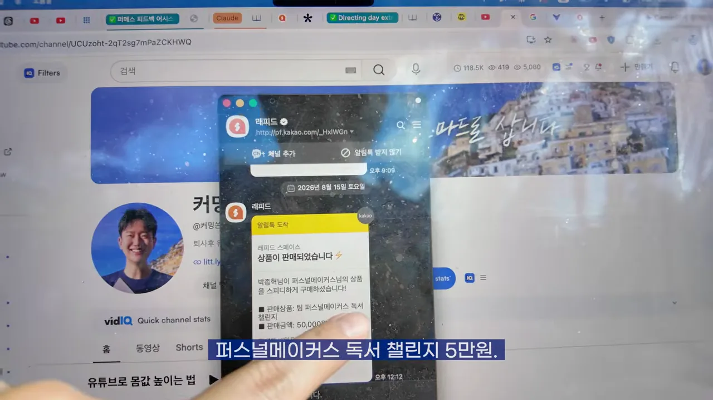
무료와 유료 챌린지를 나란히 놓으면 이래요. 유료는 기간이 길어지고, 무료에서 가장 좋았던 라이브가 매주로 늘었어요.
| 무료 챌린지 | 유료 챌린지 | |
|---|---|---|
| 기간 | 9일 (8/6~8/14) | 4주 |
| 가격 | 무료 | 5만 원 |
| 라이브 | 마지막 날 한 번 | 매주 |
| 모집 | 3일, 617명 | 3일, 77명 |
3일 모집의 결과
판매 관리 화면의 총 판매 금액은 3,850,000원이고, 오른쪽 끝에 77명이 보여요. 5만 원짜리 77명이니 계산이 맞아요. 아래쪽에는 이벤트가 2026년 8월 24일 12시에 시작되고, 8월 31일에 정산될 예정이라는 안내가 있어요.
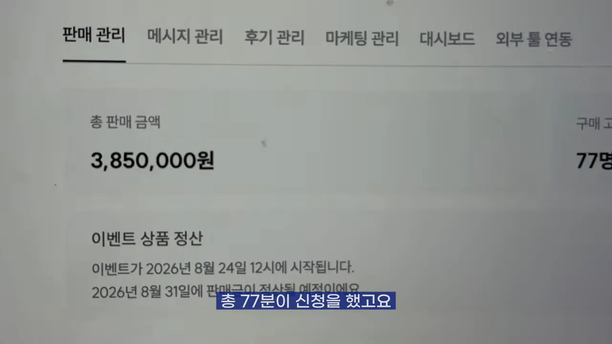
수요조사 글부터 유료 챌린지 시작까지 한 달이 채 안 걸렸어요. 아래 그림은 화면에 나온 날짜를 순서대로 이은 거예요. 색은 첫 그림의 세 단계(콘텐츠, 무료 상품, 유료 상품)와 같아요.
무료 신청자와 유료 신청자를 같은 눈금에 놓으면 아래와 같아요. 617명 중 77명이니 대략 8명 중 1명꼴이에요.
수익은 가치 교환이에요
화자는 사람들이 돈을 내는 이유를 한 가지로 봐요. 이 가격 이상의 가치를 얻을 수 있느냐는 거예요. 결제가 이어진다는 건 '내 문제를 풀어 줄 사람'이라는 신뢰를 줬다는 뜻이에요. 그래서 수익화는 단순히 돈을 버는 행위가 아니라 가치 교환이라고 말해요.
내가 그동안 쌓아왔던 신뢰를 돈으로 환전시키는 거 이게 핵심이에요.
— 영상 11:02
화자는 이 금액이 자랑할 만큼 큰돈은 아니라고 말해요. 다만 원하는 나라에서 원하는 시간에 일하는 디지털 노마드로 살 만큼은 벌고 있다고 해요. 4년 전 퇴사하고 유튜브로 퍼스널 브랜딩을 시작할 때는 될까 싶었지만, 되더라는 거예요.
구독자가 많아서 된 거 아닐까요?
화자는 이 반론을 완전히 부정하지 않아요. 유튜브, 인스타그램, 스레드, 뉴스레터가 없었다면 이만큼 알려지지도, 무료 챌린지로 이어지지도 않았을 거라고 인정해요. 대신 거꾸로 보자고 해요. 콘텐츠를 만들어 여러 플랫폼에서 나를 알리고 신뢰를 벌면 나도 할 수 있다는 거예요. 그러려면 콘텐츠를 만들고, 브랜딩하고, 모르면 배워야 한다고 해요.
마지막 메시지는 '신뢰는 금보다 귀하다'예요. 그 신뢰는 콘텐츠로 무료로 벌 수 있고, 매일 콘텐츠를 쌓는 사람은 신뢰를 복리로 불려 돈과 기회로 바꾼다고 말해요.